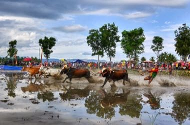

Home / Age of Contact and Craft / Southeast Asia and the Islands
Encyclopedia ID 1354
Pacu jawi
Also known as rice-field bull race


Steer a pair of bulls through a flooded rice field by holding on, steering with tail pressure and keeping a straight line to the finish pole.
Heritage note
Part of the living heritage of Indonesia. Some forms of this practice carry deep meaning for the communities who keep it; here we describe the play and the craft only, with respect for its roots. Animals are partners in this tradition; good care and local rules always come first.
Origins
Usually placed in the era of Age of Contact and Craft (about 1500 to 1800), although its exact origins are uncertain, within the cultural world of Southeast Asia and the Islands.
Sources
Related entries

Madura bull racing
Indonesia · Street and playground games
Regional pub games
United Kingdom · Street and playground games
Bakiak
Indonesia +2 · Racing
Independence-day field games
Indonesia · Racing
Sack Race
Indonesia +1 · RacingEncang kuda
Singapore · Street and playground games
More from Indonesia

Angklung bamboo chime ensemble
Indonesia · Musical instruments
Batik wax-resist pattern studio
Indonesia +1 · Crafts and making
Congklak
Indonesia +2 · Board and table games
Cublak-cublak suweng
Indonesia · Street and playground games
Egrang
Indonesia +1 · Racing
Gobak Sodor
Indonesia +1 · Board and table games